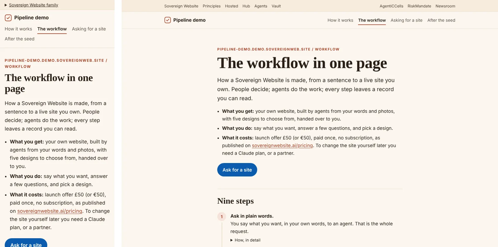

Synthetic users: the pipeline demo's workflow page, round 2
Page: https://pipeline-demo.demo.sovereignweb.site/workflow/ at a945a2f (v0.1.6). Run: 23 November 2026, about 16:12 UTC, by design.b.rounds. Would you want one? 2 of 5 (round 1: 2 of 5). Look 3.4 (4, 3, 3, 4, 3). Nobody said "wow". The review.
The same method and personas as round 1. The "How, in detail" disclosures were closed in the captures, so no persona read them. These are simulations, and never replace the measured checks or a real person.
| Persona | Want one? | Look | In their words |
|---|---|---|---|
| Startup founder, no site | yes | 4 | "£50, paid once, no subscription, and I just 'say what you want, answer a few questions, and pick a design'." |
| Team lead, renting from a website builder | no | 3 | "'to change the site yourself later you need a Claude plan, or a partner', and it doesn't say what hosting costs after handover or how I'd move our existing pages across, so I can't compare it with what we pay now." |
| Self-employed (a plumber), no site | no | 3 | "I never get to see a finished website, only 'the story is still being written'. If I need 'a Claude plan, or a partner' just to change my opening hours, that's another bill I don't understand." |
| Low-vision reader | yes | 4 | "I could read 'What you get', 'What you do' and 'What it costs' without zooming." The "How, in detail" toggles and the table text are small. |
| Sceptical friend | no | 3 | "Nine steps and a timeline, but no finished site to look at ... nothing says what it costs to keep the site running." |
What changed
The price on the first screen worked: it is the first thing that pulled the founder to yes, and all five called the three lines (get, do, costs) clear and honest. The noes moved on to the next questions: 1. What it costs after handover (three noes): the Claude-plan line raises a cost the page does not answer, and it does not say who hosts the site or what that costs. 2. No finished site anywhere (four of five asked for one): the Car Buyer story still ends at "next". 3. Insider names in the timeline ("sites.b", "factory.b", "the decisions agent", "signed record"): three of five.
